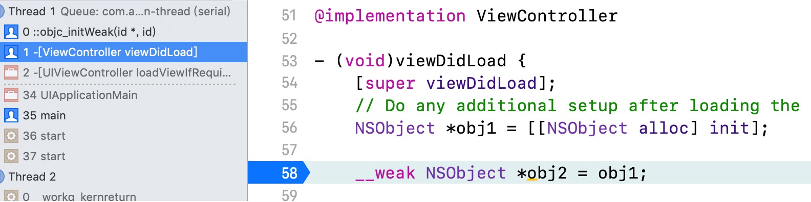
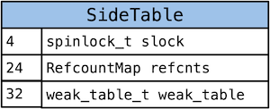
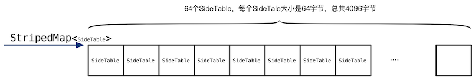
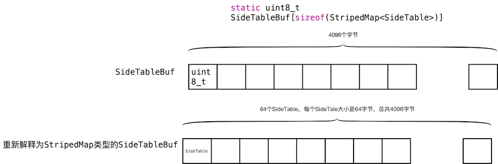
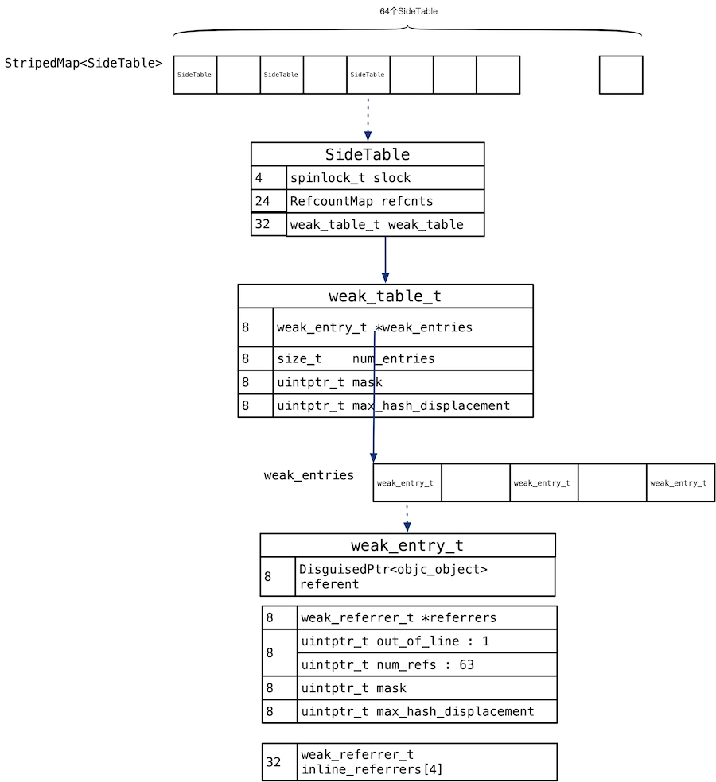

__weak探究
程序中添加了一个 __weak 变量，查看调用堆栈，看到下一个调用的是 objc_initWeak 函数。

所以我们就 objc_initWeak 函数作为入口，探究 weak。
数据结构
首先了解以下的变量，这些变量在这章的数据结构、函数形参中使用：
__weak id weakPtr = o
location newObj
refferer reffenent
引用者 被引用者
StripedMap
下面从 SideTables() 函数为入口，了解 weak 相关的数据结构。
static StripedMap<SideTable>& SideTables() {
return *reinterpret_cast<StripedMap<SideTable>*>(SideTableBuf);
}
这个函数返回 StripedMap 结构，StripedMap 是一个模板类，函数体内将SideTableBuf强制转换为 StripedMap<SideTable>
StripedMap 定义如下：
template<typename T>
class StripedMap {
struct PaddedT {
T value alignas(64);
};
PaddedT array[64];
};
上面代码是 StripedMap 的简化定义，StripedMap 是个模板类，根据模板参数 T 生成实例类，我们给模板参数传递的实参是 SideTable，StripedMap 内部只定义了一个数据成员 PaddedT array[64]，PaddedT 就是 64 位对齐后的 SideTable。
进一步简化：
SideTable array[64];
所以 StripedMap 就是 SideTable 型的数组，数组有 64 个成员。
SideTable 的结构如下：
struct SideTable {
spinlock_t slock;
RefcountMap refcnts;
weak_table_t weak_table;
}

可以看出SideTable的大小是62，64位对齐后是64。其中weak_talbe存储着weak相关的内容。其他的两个成员refcnts、slock不在本文的研究范围内。
所以数组 SideTable array[64] 中元素的大小就是 64。整个 array 共占用 64*64=4096 字节。回到没有简化前的版本，StripedMap<SideTable> 本质是一个数组，数组的元素是模板参数类型 — SideTable，大小为 64。

函数 SideTables() 是将 SideTableBuf 转化为 StripedMap<SideTable> 的。所以下面了解 SideTableBuf 的定义。
SideTableBuf
SideTableBuf的定义：
alignas(StripedMap<SideTable>) static uint8_t
SideTableBuf[sizeof(StripedMap<SideTable>)];
前面的 alignas(StripedMap) 是对齐的。sizeof(StripedMap<SideTable>) 根据上面分析是 4096，所以上面的代码简化为：
static uint8_t SideTableBuf[4096];
所以 SideTableBuf 就是一个包含 4096 个 uint8_t 的数组 。
所以，函数 SideTables() 就相当将 uint8_t SideTableBuf[4096] 重新解释为 SideTable array[64]。
static StripedMap<SideTable>& SideTables() {
return *reinterpret_cast<StripedMap<SideTable>*>(SideTableBuf);
}

weak_table_t
// 全局的弱引用表
struct weak_table_t {
weak_entry_t *weak_entries;
size_t num_entries; // 实体的数量
uintptr_t mask;
uintptr_t max_hash_displacement;
};
weak_entries一个数组，数组每个元素是weak_entry_t结构体，一个weak_entry_t结构存储了一个reffenent，以及指向reffenent的弱引用者们。num_entries是实体weak_entry_t的数量mask是容量减1.
weak_entry_t
struct weak_entry_t {
DisguisedPtr<objc_object> referent;
union {
struct {
weak_referrer_t *referrers;
uintptr_t out_of_line : 1; // 变量名是 out_of_line ，占 1 个 bit
uintptr_t num_refs : PTR_MINUS_1; // 数组中有几个元素，即 referent 有几个弱引用
uintptr_t mask;
uintptr_t max_hash_displacement;
};
struct {
// out_of_line=0 is LSB of one of these (don't care which)
weak_referrer_t inline_referrers[WEAK_INLINE_COUNT];
};
};
};
这个结构看着比较复杂：
referent存储被弱引用的对象。- 第二个成员是一个
union，存储弱引用者refferer。如果referent的弱引用者小于四个，也就是out_of_line为0时，弱引用者就存储在inline_referrers数组中。 否则，就存储在referrers中，这时out_of_line为1，referrers是个二级指针，里面存的是指向referent的对象们的地址。num_refs是弱引用着的个数。mask是容量减1。

小结
上面分析了weak相关的结构，现在画一张总图：

上面是详细的数据结构，比较复杂，下面列出我认为核心的结构，核心结构就是三级hash表。

函数接口
id objc_storeWeakOrNil(id *location, id newObj);
id objc_initWeak(id *location, id newObj);
void objc_destroyWeak(id *location);
下面章节的代码只是简化的代码，为了方便理解，可能缺失部分细节。
objc_initWeak
id
objc_initWeak(id *location, id newObj)
{
if (!newObj) {
*location = nil;
return nil;
}
return storeWeak<DontHaveOld, DoHaveNew, DoCrashIfDeallocating>
(location, (objc_object*)newObj);
}
objc_initWeak 内部只调用了 storeWeak 函数。
objc_storeWeak
id
objc_storeWeak(id *location, id newObj)
{
return storeWeak<true/*old*/,
true/*new*/,
true/*crash*/>
(location, (objc_object *)newObj);
}
objc_destroyWeak
objc_destroyWeak(id *location)
{
(void)storeWeak<true/*old*/, false/*new*/, false/*crash*/>
(location, nil);
}
可以看出 objc_initWeak、 objc_storeWeak、 objc_destroyWeak 的关键内容都是调用 storeWeak 函数，只是模板参数传递的不一样。
storeWeak
下面讲解storeWeak函数，下面只关注添加的过程。删除的过程没有关注。
template <HaveOld haveOld, HaveNew haveNew,
CrashIfDeallocating crashIfDeallocating>
static id
storeWeak(id *location, objc_object *newObj)
{
assert(haveOld || haveNew);
if (!haveNew) assert(newObj == nil);
Class previouslyInitializedClass = nil;
id oldObj;
SideTable *oldTable;
SideTable *newTable;
if (haveNew) {
newTable = &SideTables()[newObj];
} else {
newTable = nil;
}
// Assign new value, if any.
if (haveNew) {
newObj = (objc_object *)
weak_register_no_lock(&newTable->weak_table, (id)newObj, location,
crashIfDeallocating);
}
return (id)newObj;
}
if (haveNew) {
newTable = &SideTables()[newObj];
} else {
newTable = nil;
}
就是根据 newObj 找到存储 newObj 的地址对应的 SideTable。
static unsigned int indexForPointer(const void *p) {
uintptr_t addr = reinterpret_cast<uintptr_t>(p);
return ((addr >> 4) ^ (addr >> 9)) % StripeCount;
}
public:
T& operator[] (const void *p) {
return array[indexForPointer(p)].value;
}
StripedMap 重载了 [] 操作符，内部调用了 indexForPointer，indexForPointer 就是将对象的地址做某些操作，相当于 hash。然后将 hash 的结果和 64 取余，得到 0~63 的值，这个值就可以当做数组的索引使用。
storeWeak 函数接着调用了 weak_register_no_lock 函数：
id
weak_register_no_lock(weak_table_t *weak_table, id referent_id,
id *referrer_id, bool crashIfDeallocating)
{
objc_object *referent = (objc_object *)referent_id;
objc_object **referrer = (objc_object **)referrer_id;
// now remember it and where it is being stored
weak_entry_t *entry;
// 找到 referent 所在的 entry
if ((entry = weak_entry_for_referent(weak_table, referent))) {
// 将 referrer 添加进这个 entry 中，这样 referrer 就成为 referent 的弱引用之一了
append_referrer(entry, referrer);
}
// 如果没有找到对应的 entry ，那么说明 referent 还没有弱引用，就为其新建一个 entry
else {
weak_entry_t new_entry;
new_entry.referent = referent;
new_entry.out_of_line = 0;
new_entry.inline_referrers[0] = referrer;
// 数组中 4 个referrer全部初始化为 nil
for (size_t i = 1; i < WEAK_INLINE_COUNT; i++) {
new_entry.inline_referrers[i] = nil;
}
// 检查一下需不需要扩容
weak_grow_maybe(weak_table);
// 将新建的 entry 插入 weak table 中
weak_entry_insert(weak_table, &new_entry);
}
return referent_id;
}
这个函数的功能就是讲 referrer_id 插入到正确的位置，分为两种情况：
- 如果根据
referent_id可以找到一个weak_entry_t类型的实体entry，就调用将append_referrer将referrer_id插入到entry（相当于三级hash表）中。 - 如果没有，就需要新建一个
weak_entry_t类型的实体new_entry。然后调用weak_entry_insert将new_entry插入到二级hash表中。
static weak_entry_t *
weak_entry_for_referent(weak_table_t *weak_table, objc_object *referent)
{
// 不能是 nil
assert(referent);
// weak_table 中存的实体数组
weak_entry_t *weak_entries = weak_table->weak_entries;
if (!weak_entries) {
return nil;
}
// 通过 Hash 的方法找到 referent 所在的索引，不过实在看不懂
size_t index = hash_pointer(referent) & weak_table->mask;
size_t hash_displacement = 0;
while (weak_table->weak_entries[index].referent != referent) {
index = (index+1) & weak_table->mask;
hash_displacement++;
if (hash_displacement > weak_table->max_hash_displacement) {
return nil;
}
}
// 返回找到的 weak_entry_t，这里可以证明 weak_entries 确实是一个数组
return &weak_table->weak_entries[index];
}
weak_entry_for_referent 根据给的的 referent 在 weak_table->weak_entries 中遍历，是否有相同的，如果相同就返回对应的 weak_entry_t 类型的实体，如果没有 nil。
hash_pointer 就是对对象 referent 的地址做个 hash，然后和 weak_table->mask 做与操作，返回的结果小于 weak_table->mask ，当做数组的索引。
hash_displacement 记录的就是最佳位置和实际存储位置的偏移量。
static void weak_entry_insert(weak_table_t *weak_table, weak_entry_t *new_entry)
{
weak_entry_t *weak_entries = weak_table->weak_entries;
assert(weak_entries != nil);
// 通过 hash 决定 索引
size_t index = hash_pointer(new_entry->referent) & (weak_table->mask);
size_t hash_displacement = 0;
// 如果该索引中已经有 entry，那么这个索引就不能用了，就找下一个索引
while (weak_entries[index].referent != nil) {
index = (index+1) & weak_table->mask;
hash_displacement++;
}
// 将 new_entry 放入指定的索引中
weak_entries[index] = *new_entry;
weak_table->num_entries++;
if (hash_displacement > weak_table->max_hash_displacement) {
weak_table->max_hash_displacement = hash_displacement;
}
}
weak_entry_insert 就是在二级 hash 表中插入一个新的实体 new_entry。通过 hash_pointer 找到一个最佳位置 index，如果最佳位置已经有内容了，就接着查找下一个位置，直到找到空位置。记录下 index。在 index 处插入 new_entry。同时将 num_entries 累加 1。
static void append_referrer(weak_entry_t *entry, objc_object **new_referrer)
{
// out_of_line == 0 的情况
if (! entry->out_of_line) {
// Try to insert inline.
// inline_referrers 还放得下，就放在 inline_referrers 里
for (size_t i = 0; i < WEAK_INLINE_COUNT; i++) {
if (entry->inline_referrers[i] == nil) {
entry->inline_referrers[i] = new_referrer;
return;
}
}
weak_referrer_t *new_referrers = (weak_referrer_t *)
calloc(WEAK_INLINE_COUNT, sizeof(weak_referrer_t));
// 将 inline_referrers 存的 4 个对象拷贝到 new_referrers 中
for (size_t i = 0; i < WEAK_INLINE_COUNT; i++) {
new_referrers[i] = entry->inline_referrers[i];
}
entry->referrers = new_referrers;
entry->num_refs = WEAK_INLINE_COUNT;
entry->out_of_line = 1;
entry->mask = WEAK_INLINE_COUNT-1;
entry->max_hash_displacement = 0;
}
assert(entry->out_of_line);
if (entry->num_refs >= TABLE_SIZE(entry) * 3/4) {
return grow_refs_and_insert(entry, new_referrer);
}
size_t index = w_hash_pointer(new_referrer) & (entry->mask);
size_t hash_displacement = 0;
// 找到可以存放 new_referrer 的索引位置
while (entry->referrers[index] != NULL) {
index = (index+1) & entry->mask;
hash_displacement++;
}
if (hash_displacement > entry->max_hash_displacement) {
entry->max_hash_displacement = hash_displacement;
}
// 将 index 处的对象替换成 new_referrer
weak_referrer_t &ref = entry->referrers[index];
ref = new_referrer;
// 总数加一
entry->num_refs++;
}
append_referrer 是在三级 hash 表 entry 中出入一个新的弱引用着 new_referrer。
分为三种情况：
- 如果
inline_referrers没有存储满，直接存储到inline_referrers中。 - 如果
inline_referrers个数是4个了，再插入，就需要将inline_referrers拷贝到referrers，然后进入第三步。 - 如果
referrers存储满了，判断是否需要扩容，然后将数据存储到referrers中。
存储到 inline_referrers 的代码是：
for (size_t i = 0; i < WEAK_INLINE_COUNT; i++) {
if (entry->inline_referrers[i] == nil) {
entry->inline_referrers[i] = new_referrer;
return;
}
}
存储完成后，直接返回了，所以后面的代码就是存储在 referrers 的情况。
weak_referrer_t *new_referrers = (weak_referrer_t *)
calloc(WEAK_INLINE_COUNT, sizeof(weak_referrer_t));
// 将 inline_referrers 存的 4 个对象拷贝到 new_referrers 中
for (size_t i = 0; i < WEAK_INLINE_COUNT; i++) {
new_referrers[i] = entry->inline_referrers[i];
}
entry->referrers = new_referrers;
entry->num_refs = WEAK_INLINE_COUNT;
entry->out_of_line = 1;
entry->mask = WEAK_INLINE_COUNT-1;
entry->max_hash_displacement = 0;
这段代码的功能是 inline_referrers 正好4个，如果再次添加，肯定放不下了，所以将 inline_referrers 中的数据移到 referrers 中。
if (entry->num_refs >= TABLE_SIZE(entry) * 3/4) {
return grow_refs_and_insert(entry, new_referrer);
}
如果使用超过 3/4，就先扩容，然后再插入。
size_t index = w_hash_pointer(new_referrer) & (entry->mask);
size_t hash_displacement = 0;
// 找到可以存放 new_referrer 的索引位置
while (entry->referrers[index] != NULL) {
index = (index+1) & entry->mask;
hash_displacement++;
}
if (hash_displacement > entry->max_hash_displacement) {
entry->max_hash_displacement = hash_displacement;
}
// 将 index 处的对象替换成 new_referrer
weak_referrer_t &ref = entry->referrers[index];
ref = new_referrer;
// 总数加一
entry->num_refs++;
上面的代码是通过弱引用着 new_referrer 找到 index 。然后从 index 开始，寻址空位置，将 new_referrer 插入到 entry->referrers[index] 位置处。同时将 entry->num_refs 累加。
总结
weak 即是一个三级 hash 表。
- 第一级用来提高效率的，可以想象，很多对象，放到一个
hash表中，降低了效率。所有将多有的对象散列到64个表中。 - 二级缓存存储被弱引用的对象。
- 三级缓存存储某个对象的所有的弱引用者。